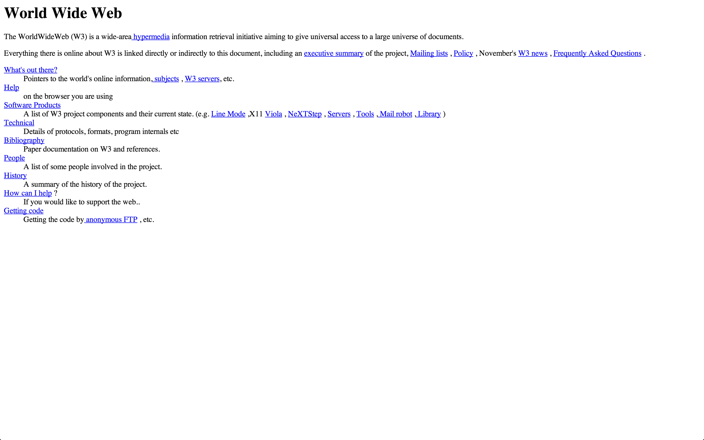

Обо мне
Привет! Меня зовут Миша и я работаю в SoundCloud.
Я занимаюсь веб-разработкой последние 8 лет и мне удалось поработать над разными проектами: дизайнерские блоги, нокиевские карты для смартфонов, веб-интерфейс для издателя книг, встраиваемый плеер для саундклауда и многими другими. Последние 3 года я занимаюсь в основном разработкой сайтов под мобильные браузеры.
Несколько скриншотов последних проектов в которых я принимал участие:
Немножко истории
1990, CERN в Швейцарии — Тим Бернерс-Ли выкладывает в сеть первый браузер и первый сервер, а также первый сайт, где он описывает использование HTML.
Первый сайт

Первые версии браузеров
- 1994 – Netscape, Opera
- 1995 – MS Internet Explorer
- 2000 – Opera Mobile
- 2003 – Apple Safari
- 2004 – Mozilla Firefox (based on Gecko, Netscape’s “engine”)
- 2007 – Mobile Safari
- 2008 – Google Chrome (based on Webkit, Safari’s “engine”)
- 2010 – Firefox Mobile
- 2012 – Chrome for Android and iOS
HTML
HTML – язык разметки информации. При помощи тэгов мы описывам смысл инфромации. Страница HTML может быть создана в текстовом редакторе дизайнером или собрана из кусков информации при помощи машины, в любом случае браузер отображает именно HTML
HTML5
HTML5 — это последняя, новая версия стандарта HTML, оформившаяся относительно недавно после длительного застоя, с 1998 года по 2009 новые функции добавлялись отдельными компаниями (Microsoft, Apple и Mozilla) в отдельные браузеры, но с 2009 года новый текст стандарта был опубликован и предложен организации занимающейся стандартизацией, что позволило производителям разных браузеров поддерживать один и тот же набор новых функций. Среди новых функций — возможность проигрывать медиа (видео и аудио) без использования плагинов (таких как Adobe Flash), встраивание векторной графики (SVG) и многие другие.
Hands-on
Первая страница
Давайте приступим к написанию нашей первой страницы.
- Создайте папку с названием CodingSchool-1 или любым другим где-нибудь в удобном для вас месте (у меня в папке юзера есть папка Source, где я храню проекты над которыми работаю).
- откройте текстовый редактор (Sublime Text)
- создайте новый файл и сохраните его как "index.html" в только что созданную нами папку, обратите внимание на то, чтобы файл назывался именно так и имел расширение
.html
- напишите внутри файла "Hello World" и сохраните его
- откройте хром и перетащите в него наш файл
Результат
Что произошло? Мы создали файл формата HTML, который браузер умеет отображать. Несмотря на то, что мы пока не написали никакого кода, браузер знает что простой текст можно просто напечатать на экране (или проговорить, например).
Первый код
Давайте напишем наш первый код
Вернемся к созданному нами HTML документу, открытому в текстовом редакторе, и скопируем туда следующий код:
<!DOCTYPE html>
<html>
<head>
<meta charset="utf-8">
<title>Moscow Coding Cool</title>
</head>
<body>
<h1>Hello World</h1>
</body>
</html>
Обновим открытый в хроме таб с нашей страницей
Результат
После обновления таба, мы видим, что текст "Hello world" стал больше размером и оказался выделенным жирным, кроме того, у нашего таба появился заголовок.
Отлично, мы разметили наш первый HTML документ! При помощи разметки мы описываем структуру и природу информации.
Давайте разберемся, как размечен наш документ и что означает каждая строчка.
<!DOCTYPE html> — строчка, которая декларирует тип документа. Она сообщает браузеру, что он работает с документом HTML. Без этой строчки, некоторые браузеры могут некорректно отоброжать полученный документ<html>, <head> и <body> — вместе с доктайпом, это стандартный набор элементов, которые будут существовать для любой страницы.
<html> — это корень документа. Родитель всех остальных элементов, внутри должны находиться <head> и <body>
<head> – элемент содержащий метаданные о странице. Такими данными например могут быть заголовок документа, который потом отображается в гугле, используемая кодировка, ссылка на картинку которую отобразит фейсбук, если вставить в него ссылку на эту страницу.<body> – содержимое этого элемента браузер будет отображать.
<meta charset="utf-8"> – это тэг описывающий страницу, содержащий информацию о странице, в данном случае этот тэг сообщает браузеру и любому другому потребителю этого документа, что текст в нем содержит знаки в кодировке UTF-8. Я рекомендую всегда использовать именно такую декларацию кодировки. Важно: декларация кодировки должна быть первым ребенком элемента head.<title>Moscow Coding Cool</title> – это тэг отвечающий за заголовок страницы<h1>Hello Worldl</h1> – мы разметили текст “Hello World” обозначив его как заголовок первого уровня, heading one.
Определения
Тэг – это метка, специальный синтаксис определяющий начало или конец HTML элемента. Тэг состоит из угловых скобок "<", ">" и названия элемента (например head). Есть открывающие и закрывающие тэги. Для обозначения закрывающего тэга используется косая черта (правый слэш). То есть <html lang="en"> это тэг, также как и <title> и </head>.
Элементы - это компоненты, состовляющие вместе веб-страницу. Заголовок в названии таба - это элемент, также как и все тело документа, также как и выделенный жирным кусок текста. Элементы могут содержать другие элементы и текстовое содержимое, а также могут иметь аттрибуты.
Аттрибут — слово, описывающее какое-то свойство элемента. Аттрибуты размечаются внутри открывающего тэга через пробел от названия тэга. Большинство аттрибутов имеют значение, которое задается при помощи знака равно «=» и кавычек «""». Аттрибутов может быть больше чем один, тогда они разделяются пробелами:
<meta charset="utf-8">
<html lang="en">
<body id="home" class="awesome">
<input name="description" type="texatrea" required>
Снова посмотрим на код страницы index.html в текстовом редакторе:
<!DOCTYPE html>
<html>
<head>
<meta charset="utf-8">
<title>Moscow Coding Cool</title>
</head>
<body>
<h1>Hello World</h1>
</body>
</html>
Здесь мы видим 5 элементов, в «корне» нашего «дерева» находится элемент html, его «детьми» явлются элементы head и body. У элемента meta, есть аттрибут “charset” значение которого “utf-8”. Кроме того, у элементов head и body есть «дети», элемент title и элемент h1.
Наличие иерархии является важным качеством кода HTML — мы можем выстроить наши элементы в виде дерева:

Для описания иерархии используются слова родитель и ребенок.
Элементы являющиеся детьми одного элемента называют сестринскими (siblings).
Форматирование документа и комментарии
Форматирование
Существуют общепринятые правила форматирования кода — следование этим правилам сделает ваш код более читаемым и простым для понимания.
Пробелы, табы и переносы строки — эти специальные «символы» называются whitespace, они помогают оформлять текст.
Как мы уже сказали, HTML код предствляет иерархию, поэтому правила форматирования HTML помогают увидеть эту иерархию работающему с кодом человеку
Давайте посмотрим на криво отформатированный HTML код:
<html><head><title>Bla-bla</title><body>
<h1>Whoa
</h1>
<ul><li> test</li>
</ul></body>
</html>
А теперь отформатируем этот код правильно:
<html>
<head>
<title>Bla-bla</title>
</head>
<body>
<h1>Whoa</h1>
<ul>
<li>test</li>
</ul>
</body>
</html>
Правильное форматирование кода позволяет избежать ошибок, таких как незакрытые тэги или кавычки аттрибутов или неправильного отношения элементов.
В зависимости от команды в которой вы будете работать или от вашего личного предпочтения для отступов используется либо знак tab, либо несколько пробелов, обычно от двух до четырех. Для контроля ширины отступов у всех нормальных текстовых редакторов есть специальная настройка.
Вот небольшой набор правил для авторства HTML документов:
Комментарии
Комментарии используются для того, чтобы оставлять пометки которые не влияют на отображение документа, они обычно описывают код
<head>
<!-- The title of the page -->
<title>Hello World</title>
</head>
<body>
<!-- main content of the page -->
…
<!-- advertising links below -->
…
</body>
Комментарии в основном используются для следующих целей:
- что-то вроде сообщения читающему код человеку — себе или кому-то другому
- для визуального разделения кода документа на части
- для того, чтобы закомментировать часть кода, так что он не будет использоваться браузером
Практика
Давайте попробуем поупражняться в написании кода. Упражнение 1
Wikipedia
Сейчас мы закодим свой вариант википедии. Откройте, пожалуйста, страницу Дэвида Бирна.
- Создайте папку
wikipedia рядом с нашей первой папкой
- Создайте новый файл в текстовом редакторе (File – New File) и сохраните его в папку wikipedia с именем
david-byrne.html. Пробелы не являются разрешенными символами для адресов страниц, поэтому мы заменяем пробелы на знак «минус». Кроме того, для адресов страниц принято использовать латинские буквы в нижнем регистре.
Скопируйте следующий код:
<!DOCTYPE html>
<html lang="en">
<head>
<meta charset="utf-8">
<title>David Byrne – Wikipedia, the free encyclopedia</title>
</head>
<body>
<header>
<h1>David Byrne</h1>
</header>
<section>
<p><strong>David Byrne</strong> (born May 14, 1952) is a Scottish-born musician permanently residing in the United States, a founding member and principal songwriter of the American New Wave band Talking Heads, active between 1975 and 1991.</p>
</section>
<section>
<h1>Contents</h1>
<ul>
<li><a href="#early-life">Early life</a></li>
<li><a href="#talking-heads">Talking Heads</a></li>
<li><a href="#interesting">Interesting facts</a></li>
</ul>
</section>
<section id="early-life">
<h1>Early life</h1>
<p>David Byrne was born in Dumbarton, Scotland, to parents Tom and Emma. He was the elder of two children. Two years later, his parents moved to Hamilton, Ontario, and then to Arbutus, Maryland, when he was 8 or 9 years old. His father worked as an electronics engineer.
Before high school, David Byrne already knew how to play the guitar, accordion, and violin. He was rejected from his middle school's choir because they claimed he was "off-key and too withdrawn". From a young age, he had a strong interest in music. His parents say that he would constantly play his phonograph from age three and he learned how to play the harmonica at age five.[5] In his journals he says, "I was a peculiar young man—borderline Asperger's, I would guess".[6][7] As revealed by Tina Weymouth in the commentary for the concert film Stop Making Sense, Byrne is left-handed but plays guitar right-handed.</p>
</section>
<section id="talking-heads">
<h1>Talking Heads</h1>
<p>He graduated from Lansdowne High School in southwest Baltimore County. Byrne started his musical career in a high school duo named Bizadi with Mark Kehoe. Their repertoire consisted mostly of songs such as "April Showers", "96 Tears", "Dancing On The Ceiling", and Frank Sinatra songs. Byrne then attended the Rhode Island School of Design (during the 1970–71 term) and the Maryland Institute College of Art (during the 1971–72 term) before dropping out and forming a band called "The Artistics" with fellow RISD student Chris Frantz.[8] The band dissolved within a year and the two moved to New York together with Frantz's girlfriend Tina Weymouth. Unable to find a bass player in New York, Frantz and Byrne persuaded Weymouth to learn to play the bass guitar.</p>
</section>
<section id="works">
<h1>Works</h1>
<h2>Solo studio albums</h2>
<ul>
<li>My Life in the Bush of Ghosts (with Brian Eno) (1981)</li>
<li>Rei Momo (1989)</li>
<li>Uh-Oh (1992)</li>
<li>David Byrne (1994)</li>
<li>Feelings (1997)</li>
<li>Look into the Eyeball (2001)</li>
<li>Grown Backwards (2004)</li>
<li>Everything That Happens Will Happen Today (with Brian Eno) (2008)</li>
<li>Love This Giant (with St. Vincent) (2012)</li>
</ul>
<h2>Talking Heads studio albums</h2>
<ul>
<li>Talking Heads: 77 (1977)</li>
<li>More Songs About Buildings and Food (1978)</li>
<li>Fear of Music (1979)</li>
<li>Remain in Light (1980)</li>
<li>Speaking in Tongues (1983)</li>
<li>Little Creatures (1985)</li>
<li>True Stories (1986)</li>
<li>Naked (1988)</li>
</ul>
</section>
</body>
</html>
Результат
Новые элементы
Мы использовали несколько новых элементов. Разберемся что каждый из них означает:
- section – этот элемент используется для выделения смыслового фрагмента документа, к этому же классу элементов относятся еще header и aside
- strong – этот элемент используется для выделения слова или части текста как более важного по смыслу, по умолчанию браузер выделит такой текст жирным
- ul – unordered list – несортированный список — элемент использующийся для обозначения списков. Интересным свойством является то, что этот элемент должен всегда сопровождаться хотя бы один «ребенком», элементом списка
- li – list item – элемент списка
- a – anchor – королева всех элементов, ссылка. У ссылки есть необходимый аттрибут — href (hypertext reference) — который указывает куда именно ведет ссылка. В нашем примере мы использовали идентификатор фрагмента документа в качестве адреса ссылки. То есть при навигации по этой ссылке браузер должен перейте к обозначенному фрагменту.
- h2 – heading 2 – заголовок второго уровня, используется для подзаголовоков, задающих тему последующих кусков информации. Вообще заголовки существуют от первого до шестого уровня:
h1, h2, h3, h4, h5 и h6
Фрагменты и ссылки
Обратите внимание на аттрибуты секций и ссылок в разделе “Contents”
…
<li><a href="#early-life">Early life</a></li>
<li><a href="#talking-heads">Talking Heads</a></li>
<li><a href="#interesting">Interesting facts</a></li>
…
<section id="early-life">
…
</section>
<section id="talking-heads">
…
</section>
<section id="works">
…
</section>
— аттрибут id позволяет выделить фрагмент документа, т.е. при помощи этого аттрибута браузер знает к какому фрагменту нужно перейти при навигации по соответствующей ссылке.
Ссылки
Мы сделали так, чтобы браузер перешел к определенному фрагменту нашей страницы. Но главное качество гипертекста — это ссылки между разными документами.
- Создайте новый файл в папке
wikipedia с именем talking-heads.html
- Отройте его и скопируйте в него следующий код, но замените значение аттрибута
href на название первого файла, а текст внутри тэга замените на такой, который подходит вашей странице по смыслу
<!DOCTYPE html>
<html>
<head>
<meta charset="utf-8">
<title>Talking Heads</title>
</head>
<body>
<a href="david-byrne.html">David Byrne</a>
</body>
</html>
- Теперь давайте вернемся к первому файлу и в нем в каком-нибудь из первых параграфов поставим ссылку на нашу новую страницу
<p><strong>David Byrne</strong> (born May 14, 1952) is a Scottish-born musician permanently residing in the United States, a founding member and principal songwriter of the American New Wave band <a href="talking-heads.html">Talking Heads</a>, active between 1975 and 1991.</p>
- Сохраните оба документа, обновите первую страницу и попробуйте проследовать по ссылкам в обоих документах
Результат
Класс! Мы почти закодили википедию!
Картинки
В Википедии довольно часто встречаются картинки, давайте добавим какое-нибудь изображение на нашу страницу.
Для вставки изображений используется тэг <img>. Но просто тэга недостаточно, нам нужно уточнить что именно за изображение мы хотим увидеть. Для этого используется аттрибут src. Его значением будет путь к изображению. Понятие «путь», path по-английски, используется постоянно и является одним из важных для понимания терминов.
Path — строка текста, содержащая адрес к какому-то ресурсу. Это может быть другой HTML документ, картинка или медиа-объект, вроде аудио или видео. Пока будет проще всего думать о путях как об адресах файлов на файловой системе компьютера, но относительно других файлов.
Вот примеры относительных путей:
talking-heads.html – путь к файлу talking-heads.html находящийся в той же папке что и ресурс, который ссылается на этот файл../index.html — путь к файлу index.html находящийся в родительской папке, один шаг «вверх» по деревеу файлов../../typography.cssimgs/header/logo.png — путь к изображению logo.png на два уровня «ниже» в файловой структуре, в папке header, в папке imgs, которая находится в одной папке с файлом, который ссылается на это изображение
- в папке wikipedia создайте папку imgs
- откройте картинку по ссылке и сохраните ее в только что созданную папку imgs
Давайте добавим новую секцию в нашу страницу на википедии сразу за первой секцией с параграфом текста:
<section>
<p><strong>David Byrne</strong> (born May 14, 1952) is a Scottish-born musician …</p>
</section>
<aside>
<img src="imgs/david-byrne.jpg">
<h1>David Byrne</h1>
</aside>
Результат
{kind=link}